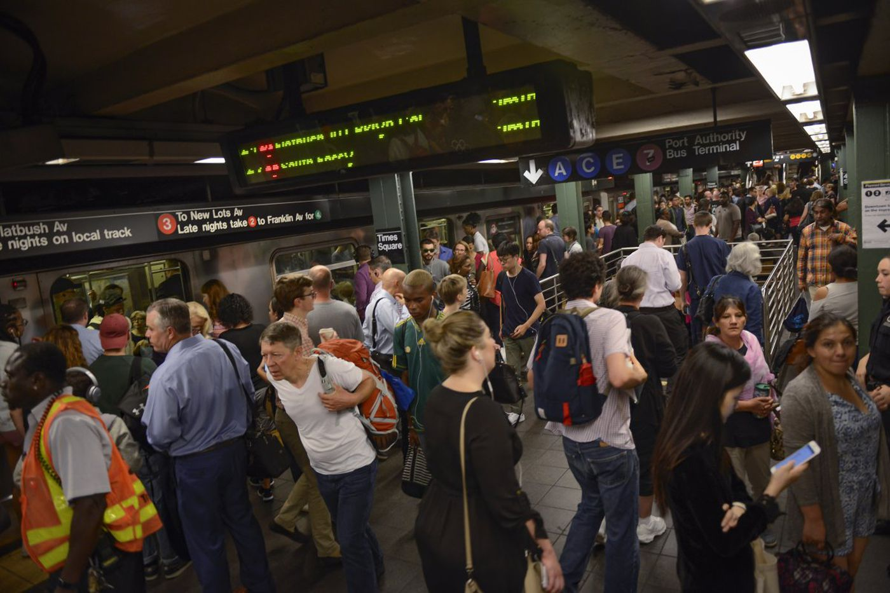

NYC Spots
NYC is one of the most popular cities in the world, you'll never be able to see all of it
Places you shouldn't miss
- Restaurants(specifically in Chinatown, East/West Village, and Midtown)
- Central Park
- Any Museum
- Little Island
- Governor's Island
- Pier 2

Places you're better off without
- Times Square
- Overcrowded trains
(probably Brooklyn Tech too)